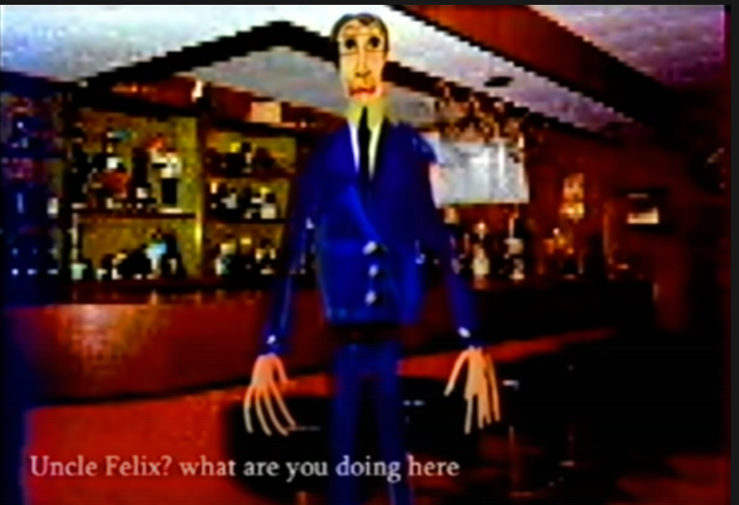

Note: This review will contain spoilers for The Walten Files. I recommend having watched it, or at least the four major canon episodes (Company Introductory Tape, Relocate Project, Bunny Farm, and Guilty.) You could also get away with these first three.
On the night of May 1st, 2022, my friend and I got together to watch The Walten Files together. We had hoped to watch all 8 videos of Season One, four of which are canon (the ones mentioned in the disclaimer), and four of which that are non-canon/supplementary material. After we finished with Episode 6, we both noticed with some amount of horror that the next episode was around 40 minutes long. At that point, we decided to give up and watch What We Do in the Shadows instead (great show btw), because we could not handle watching any more of The Walten Files.
This is that kind of review.
Below, you will get a short episode breakdown for the episodes we watched, and then a section at the end to sort of wrap up my thoughts. I want to start though by saying that I don't hate anyone involved with The Walten Files, please do not get mad at me if you like it. This is just my opinion, you know?
Here's a brief summary: The Walten Files is a YouTube horror series made by Martin Walls. The series is inspired by Five Night's at Freddy's and even more so the popular YouTube analog horror series FNAF VHS Tapes made by Squimpus McGrimpus.
The plot follows the strange, tragic events that surrounded the Chuck E Cheese like Bon's Burgers, which had a cast of five animatronics known as The Showstoppers. The two owners of this establishment/the parent company are Jack Walten and Felix Kranken.
The Showstoppers are:
- Bon, a blue rabbit.
- Banny, a purple rabbit.
- Boozoo, a carnival ringmaster type.
- Sha, a sheep.
- Billy, a clown.
Throughout the series, we hear of "Bunny Smiles Incorporated" which is like a parent company for Bon's Burgers & spinoff projects.
Anyways, let's get started.
Company Instructory Tape
The plot of this episode is that it's an introduction tape for people working at Bon's Burgers. We get introduced to characters like Felix Kranken, Jack Walten, and Bon the animatronic rabbit.
Right off the bat, the animatronic designs for The Showstoppers are all very, well, evil looking. It reminds me a lot of movies like Annabelle where you ask yourself, "Why the fuck would any child get near this thing?" which is a valid question. At the core of "children's thing turned evil" as a horror genre, there's an almost reflexive tendency to try to make the children's thing look as scary as possible, but this is a detriment for many reasons. It takes you out of the story in a lot of ways, it's a rather lazy form of going "this is what you should be scared of!".
For example, let's look at Bon. Bon is evil looking from the very beginning. We see Bon in the first 50 seconds into the first episode, and already you're drawn out of the experience. I get that a lot of kids found animatronics scary, but this design is too unbelievable that anyone would ever actually buy into it as something that went into a child's entertainment place.
Let's look at what Bon has allegedly based off of, which is the first costumes for Chuck E Cheese.

Now, Charles Entertainment Cheese doesn't look great here, but still has the sense of having been made for kids.
Anyways, less than 2 minutes in and we get our first scare. The Walten Files has no sense of pacing or building tension.
The minute before that scare, it's the animatronics singing some old songs, because The Walten Files relies a lot on the logic that old songs are going to immediately chill you to your core. They don't, the scene goes on for far too long, and when the scare comes it's less like the monster finally showing itself and more of a blessing to break up the monotony of watching an animatronic music video (the shitty type of AMV).
After this first scare, which is some loud scraping noises, back to the framing device, which doesn't matter because a few minutes later and after some pitch shifting on a voice to make it scary(??), we're to another framing device. This happens a lot in the first two episodes of The Walten Files, where there's about three framing devices in both of those episodes. Every one gives you a major sense of whiplash and tend to not flow into each other very well. The reasoning for this in universe is that we're watching three VHS tapes at a time, but that doesn't do much besides making these episodes kind of confusing to watch.
In this next framing device though, a little cartoon about the characters, we get introduced to what makes it hard to ever find the Walten Files scary.
So, The Walten Files' main thing for horror is that it likes to use distorted faces. That's fine, that's a style, but it becomes a problem when it's used several times an episode, sometimes multiple times in a row. At a certain point even before the first episode ends, this becomes less scary and more tedious than anything else. In the first episode, The face melt scenes happen 5 times and the episode is only 10 minutes long. And most of these happen in the last 7 or so minutes. We're getting a rate of like, .71 scary faces a minute, which does not make for sustainable horror.
The animated segment doesn't do much except introduce us to two plot points: Jack Walten being missing, and Sophie being someone who is taking pills. We'll talk about Sophie later, I have a LOT to say about her big episode.
Next segment is about a guy named Brian who is going to the borderline nuclear bunker that all these animatronics are kept in. The idea is that Felix Kranken, co-owner of Bon's Burgers and Bunny Smiles Incorporated with Jack Walten, wants to restore these animatronics, reprogram them, and use them in other places. Brian is one of the technicians, he goes into the bunker, he gets murdered in a forest by the main animatronic Bon and some loud noises happen. Onto the next one.
Relocate Project
Episode 2 goes into further detail about Felix Kranken's plans to remodel and move the animatronics, named the Relocate Project. In this episode, we get introduced to a character trait of Felix where he's a pretty selfish guy and takes all the credit for Bon's Burgers even though Jack Walten was the main brain behind it.
This episode starts with some exposition and a few scares here and there, with one of my major annoyances in this episode being the scene where Banny is being tested for her facial expressions. During some of these movements, you see a person's face distorted and placed over the animatronic. It’s an unsettling piece of imagery and done well. Then they do the effect two more times in a row. Just in case you missed it, I guess?
Episode 2 fits a lot into the "throw a bunch of horror imagery at the wall and see what sticks" method, which means that you get a lot of loud noises and photoshopped faces . Mixed with the terrible audio mixing in these episodes, you won't be understanding like half of what's going on in the plot of the episode.
After a sequence about Banny feeling trapped within the building and her making some faces at us, we move on to another framing device, this one being Technical Support. Sha the Sheep narrates this one, and she's introducing us to the K-9 storage facility, that bunker we saw earlier, and tells us about what we should bring.
After she mentions the ID card, we see Brian's ID card and here I have to wonder if I'm supposed to give a shit about Brian. He was introduced in the last few minutes of Episode 1 and didn't do much besides explain to us what he was doing out loud and then die. Were we supposed to get attached to him so it is horrifying and sad when we see his ID card flash on the screen, or is this to remind us that he existed because he was a forgettable character? I can't tell.
After this we get some more dialogue that doesn't do much, and then we get introduced to the funniest shot in the series.
I'm sorry. I know this shot is supposed to be scary, but I have laughed every time that I watched this video. It's a good example of how the series thinks that putting a distorted face or putting some black eyes on a picture is scary without any effort to actually create a scary moment. Show us an image, blare some song from the 50s at full volume, and you got yourself a scare.
The next few minutes continue along the same path: Sha is talking about some OSHA-type stuff about being safe and what to do inside of the storage facility, and then someone makes a scary face that's been put through the liquify tool a few times, or their voice gets deep all of a sudden, and I'm supposed to be shitting my pants with fear.
During this scene, we find out that a woman looking for her missing husband has been killed by Bon, dismembered, and stuffed into Sha's animatronic frame. There's a lot of very loud noises and people bleeding from the eyes, and we get one of the recurring themes that Bon believes that turning people into these animatronics makes them 'beautiful', which is a thing that kind of gets elaborated on later.
After this, we're on the third part, which introduces the part of the series that’s the most obnoxious. I hate how the dialogue in The Walten Files is always so literal and repetitive. In the first part of the third framing device, a group of Bunny Smiles Incorporated employees are going to stay the night at the storage facility to reprogram the animatronics. Not because we needed to give the characters a reason to stay in this comically creepy looking place, promise. These characters talk a lot, and the first time we hear them talk is one of them, Hilary, explaining the spooOOoooky events of what's happened at this facility to her coworkers.
I don't get why exactly she's doing this. These characters also work at this company. Why would they not know about this? The information she's giving seems like something that people would have talked about.
The events of this story take place in Brighton, Michigan, a place that in 2022 has around 7.5 thousand people. That's tiny, and it was under three thousand during the period this story takes place. Word would very rapidly get around about these strange murders going on in this small town.
"Vincent," I can hear you saying, "Aren't you being a pedantic ass about this?" and sure, but this is just another example of how little things draw you out of the story. Why don't these characters know this? Why do we need Hilary to very obviously exposit to us about these events like we needed to know them right now instead of having us learn this in a more natural way?
After the expositing, a character brings up that the forest is scary and reminds him of Texas Chainsaw Massacre (which doesn't really take place in a forest but whatever) and we go inside.
The characters look at the animatronics, and Hilary at one point says, "Hey Kevin, I doubt we can add the Blink and Eyes feature on this one, his eye sockets are really damaged, almost as if someone did this intentionally."
This comes up a lot. Characters will just say the most obvious shit out loud like we need to have our hands held through this. You could cut half of this line out and nothing changes. Add a less obvious tell, like Hilary pointing out that the damage isn’t anything she’s seen on this animatronics before.
This continues with Ashley being very interested in this Small Key that the company gave them that doesn't seem to go anywhere, so she decides to go find out.
If you've seen any piece of horror media, you know exactly how this goes.
She tells us what's happening on screen, she gets murdered and stuffed into a clown animatronic, the traditional scary shit of bleeding from the eyes, loud music, distorted faces, etc. It's at this point that I'm becoming convinced that they just made one episode and used a neural net to make the others, but unfortunately, Episode three is so bad that this theory doesn't account for that.
Lucky You
This isn't episode three, more like episode 2.25. I have very little to say about this episode. It's certainly an episode of The Walten Files. Same shit, except this one is more focused on the character of Sophie and the characters seeming to directly speak to her.
Commercial
Episode 2.25... again?, and one that grinds my gears. Let me explain.
This episode introduces us to an arcade machine that was made based around the character's from Bon's Burgers. Made by BunnySmilesGames, it's called Bunny Farm that comes out in 1982. It has a save file system and is essentially a small RPG where you go around and talk to characters and do tasks for them.
Awesome, except making this an arcade machine makes no sense. I need you to hear me out on this one, because this is going to seem nerdy and pedantic as fuck but I promise this circles back to a larger point about the show.
Arcade machines did not have save systems. They were intentionally designed to eat up money, which they can't do if you can save. Generally, you'd get a chance to restart at a point you died if you paid another quarter, or you'd just have to restart from the beginning and still pay. No arcade machine would be designed like this, this game would take a while to beat and your save file would get saved over before you ever had the chance to come back and play it.
Why does this matter? Well, it's just lazy. I guess they went 'oh, arcades were popular in the 80s, let's go with an arcade machine' without putting any thought about how to integrate this game into the narrative of the story in a way that doesn't immediately drag you out. This very easily could've been a console game and all of this could've been fixed, but instead the entire premise of this episode and the next episode just start to stick in the back of your mind.
You may not have noticed it, but your brain does. The time period that they chose for this series, the 70s and the 80s, feels more like an excuse for the analog aesthetic rather than anything that actually was thought about. This comes up later too.
This episode is short and just is a teaser for the next episode, Bunny Farm.
Bunny Farm
I feel like this as good a time as any to mention that I like analog horror when it's done well. I’m not a hater of the genre. I also want to point out that I like to judge The Walten Files on its own merits. I’m not comparing it to anything, even the things that its inspired by.
So, when I first watched The Walten Files a few months ago, I thought the first two episodes were shaky but fine. That’s okay, I thought, it just needs some time to find its stride. The 3rd episode is really long, so more time was put into it, and it should be better.
Oh boy, how wrong I was.
Bunny Farm might be some of the worst horror content I've ever seen on Youtube.
Bunny Farm is a fucking slog to watch. It's almost an hour long, and it feels like three hours.
Bunny Farm is the "we have analog horror at home" of the analog horror scene.
I hate this episode. To be fully honest, I wrote this review because I found myself often ruminating on how much I hated this episode. It's the sort of hate that sticks with you, gets caught in your teeth and refuses to leave. I'd find myself in calm moments, at peace, and then a scene from Bunny Farm would pop into my head. I would start to grit my teeth. My friend would get a DM like "I know I've talked about this before, but I fucking hate this episode," and I would explain it all over again. It never felt like a good enough outlet. It was a fire that burned continually, fueling itself every time I thought it had died down. It's the sort of hate that I think I will still feel at my death bed. My children and grandchildren will lean down to hear me say my final words, and they will simply be, "I hate The Walten Files episode Bunny Farm." and they will pull the plug on me because clearly I am too far gone.
Let's begin.
In this episode, Sophie and her girlfriend Jenny play the Bunny Farm arcade game. The machine was recently installed in the basement of the building they live in, and Jenny wants to show Sophie some creepy things she saw while playing herself.
They make a save file on this arcade machine like you normally do, and get started.
One of the parts of this episode that I find most intolerable is the dialogue. Everything I said about it being on the nose and bad is ramped up to like, 800% in this episode. Bless Sophie and Jenny, but they're just little exposition machines all the way through.
Despite being girlfriends (which is not explored in this episode but rather something the creator confirmed in a Discord conversation. This isn't a knock, just a note that you 100% do not get this impression in the episode.) these characters talk like they've barely met. It's like when you meet someone you knew from high school at the store and you make awkward small talk before going on with your lives.
One of the earliest lines of dialogue that makes me roll my eyes is Jenny going, "Yeah, the idea is that you play the game from scratch." when they're making a save file for Sophie. Great, Jenny. I was worried this was like other games where you start from someone elses save file.
Sophie saves her name as Soapie because she can't backspace on the name for her save file, this comes up later.
We watch the opening cutscene for Bunny Farm where Bon and Banny tell everyone about the Annual Fruit Festival that they all forgot about, and it's happening today. Now they need to all go around and collect fruit for the fruit festival from Pete the Hippo.
This is a pretty minor critique in the grand scheme of things, but I can barely understand Banny's dialogue due to her voice. I'm glad this part is captioned because the captioning on this episode through the Youtube Subtitles (which is not autogenerated, this is the actual captions) miss whole lines of dialogue. I have some audio processing issues and there are entire chunks of this episode where I couldn't understand a word.
The game starts for real, and Sophie mentions that she likes the art work but something about it seems... familiar to her. For fuck's sake. This happens a lot through this episode, get used to Sophie saying some very obvious foreshadowing shit in a way that no real human would talk.
Jenny talks about seeing weird glitches in the game, they point out that it's a beta test like we didn't just see that when the game started and had a very obvious screen that mentioned that it was a Beta Build, and Jenny mentions Bunny Smiles Incorporated or BSI as she calls it. Sophie asks if she's heard that name before, it seems... familiar. It probably seems... familiar because it was on that beta testing screen that they both saw and commented on. Carrying on.
Jenny mentions some shit went down with BSI, Sophie acts surprised even though as I mentioned previously this would be very big news, we keep hearing Sophie mention that something seems familiar and by the time we get to the first minigame inside of Bunny Farm, Jenny has to go write a paper and leaves Sophie down in the basement to play this creepy arcade game.
The Clown Billy says some stuff that I can't understand well because of the way the voice of the character is done and the lack of subtitles, some scary scenes happen that Sophie doesn't comment on.
She collects some stuff and plays tic-tac-toe with a robot in the game to get a present that she needs to collect. We watch her actually play all of these minigames, by the way.
We see a scary distorted face after she picks up that present and some really loud noises happen as the Clown's face gets all distorted and the game freaks out. Sophie actually seems shaken by this and the footage stops here before we come back tomorrow where Sophie and Jenny are playing the game again.
Sophie mentions that the game was showing her weird visuals, "like if I was being told something, I guess" to which Jenny replies, "like a message?" (real quotes from this episode)
It's late, and Jenny mentions that fact and asks if Sophie wants to wait until tomorrow morning so they can play together. Sophie mentions that Jenny can leave if she wants, and they should've added an audio cue for how quickly Jenny gets the fuck out of there when Sophie says that. Considering that Sophie seemed really shaken by the events of yesterday, this is just kind of a bizarre reaction which further adds to my 'they don't really seem to like or care for each other that much.' thing with them.
Sophie goes to play, and oh no! Her save file is corrupted. There's a nice 3d graphic that just feels out of place. For reference, this is what 3D graphics looked like at the cutting edge in video games in 1984, 2 years after Bunny Farm was made.
Yeah, just another thing that takes you out. I guess you can chalk a lot of this up to it being a haunted game, but the lack of consistency with the time period is a bummer.
Sophie thinks that she should dig deeper into the save where the scenes with Billy the clown happened, and plays on the corrupted save file.
The next minigame is Banny's and we have to catch some pigs that Banny let into Pete the Hippo's house. You have to go around and collect some keys and use them to open doors to find all the pigs. Sophie goes into a room where she does a tile rotation/movement puzzle, and she brings up that "I noticed that these errors act in a certain way as if that unknown error mentioned earlier was something or someone trying to talk to me? Trying to get me to do something? Especially because these all occur when I interact with the characters, it could have something to do with them."
We have over 30 minutes left in this episode. There is not much reprieve from this.
We watch her do the whole tile rotating puzzle because watching someone do children's puzzles is very tension building. I personally shiver in my boots when I see someone with those board puzzles where you put the shapes in.
A scary face pops up, and the name Susan Woodings flashes on screen after that. Then we hear an audio log from Susan Woodings. Mr. Walten is missing and she's going to fix Bon the animatronic because he's been acting strange. Sophie says nothing as she controls a figure with Rosemary's photo plastered on top and goes to fix Bon. We see the same scary face that happened 3 times in Episode 2 again, it gets bloodshot eyes and all dirty, and then we see a picture of what is presumably Susan's dead body. The Bon character gives a gift to Banny, with the implication being that that "gift" is Bon shoving Susan's corpse into Banny.
Loud noises, a screen that says "You just made Susan beautiful!" continuing the idea of 'beautiful' as what Bon thinks he's making his victims by stuffing them into animatronics, more scary faces and loud music, and then we're back to the hub screen of the game.
Sophie says that it was confusing and scary, and "It felt like I was being told a story or a certain event? I mean, clearly I was..." Yeah, Sophie, you've brought it up several times at this point. Also, you just saw someone’s dead body. You’re acting very calm about this.
She then brings up that she takes pills that make her forget things from her teenage years/childhood and this makes my eyes roll. It's just a bit of a silly thing for her to exposit once again, and the idea doesn't really do much considering that this plot point is introduced fully in this episode, and then she starts remembering all the things she forgot... also in this episode.
I have to wonder why this is all one episode. Sophie is fully introduced after being mentioned, and we immediately go through a whole arc about her having forgotten things about Bunny Smiles Incorporated and then remembering them. Even in a long episode with a lot of filler, it's very jarring that we have no real time to ruminate on this or even know who Sophie is as a character. In this episode, she's a bit of a blank slate and like with a lot of other characters, we don't have much reason to care about her because we just met her.
Sophie continues playing, and the mailbox in the game has a document that is a long series of diary entries and a letter from Felix's former wife, Lisa, on why she left him.
Long story short, he is an alcoholic, acting very strange, and a lot of the pages are blocked out/redacted for some reason. These entries start in the 60s so we learn that Felix's alcoholism has been a problem for a long time. It's hard to read these letters since they're handwritten and the captions for them only show up for about 2 seconds before disappearing.
The letter that it ends with is from Lisa about how she's leaving Brighton, says that their relationship was never healthy, and she's outta there. All Sophie says during this is that she feels like she shouldn't be reading it, which is very non-reactive at this point.
The next part is with Boozoo and this is one of the worst parts in terms of pacing. We're preparing for a kid's birthday party, and during this we have to sit through Sophie once again saying that she feels like the game is telling her something, and then we have and I shit you not, a four minute segment of her playing a matching game and then a spot the difference game.
There are some scares interspersed but it doesn't matter. It's a very long four minutes, especially considering that the spot the difference game has Boozoo repeat one line of dialogue over and over: "You spotted a difference! Good job!"
Honestly, the loud jump scare noises were blessings after that.
After she plays these games, we're greeted by a sequence of edited scary faces, Sophie mentions once a fucking gain that she feels like she remembers these people and she thinks the game is trying to tell her about their deaths, and I get a step closer to just turning off the audio and putting literally anything else on because it would probably be just as effective in terms of horror with half the annoyance.
Next part is Sha. We get further confirmation that Rosemary Walten, wife of Jack Walten, is the one in Sha's suit and we listen to some loud screaming as more scary faces pepper the screen in an endless slideshow of misery.
The next part is a bear coming out of a well asking if Sophie (it does refer to her directly and not by the name she gave on the save file, spooky!) wants to unlock some repressed memories.
In this next sequence, I'm not going to bother explaining the scary shit because it's all the same. Here's a synopsis of what we learn though:
Jack asked Felix to take his two kids, Edd who is 12 and Molly who is 9, to a school party. They leave at 5, get home at 9. We also learn that Rosemary can't take the kids because... gasp! She's taking Sophie to the dentist! Shiver me timbers. Felix takes the kids, and we learn that Molly has a doll named Rocket who looks a lot like Bon, who I presume is the inspiration for Bon's Burgers in the first place.
The kids lose Felix AND Rocket at the school event. They get Rocket, and find Felix at the drinking area, and I'm fucking sorry, drinking area? I know it's 1974 but it's a school dance. There are elementary school kids. The image basically shows a full bar behind Felix. Who put booze here? Why was this decision made? Why not have Felix have brought his own alcohol instead of making up the idea of a bar at an event for kids?
Whatever. Felix takes the kids home and drunk drives and kills both of them in a car crash. He feels terrible about it but worries about how Jack will react and how the business will fall apart if Jack learns about this, so he buries them in the forest and gets home somehow in his totaled car. Or he walked, I guess. Jack leaves a bunch of voicemails on Felix's phone asking where the fuck his kids are (answering machines were not in very wide use at this point and it’d be hard to get one in such a small town but whatever)
Anyways, Edd and Molly go on to possess the Rocket doll since it was left next to the graves that Felix dug. Very lucky that he brought his grave digging shovel with him that night.
Sophie unrepresses all of this (she would've been 14 during the events of Felix killing Edd and Molly). A bunch of generic horror shit happens, Sophie basically hasn't talked in the last 15 minutes of this episode, and it ends.
Guilty
After Bunny Farm, this episode feels like an ice pack after I got my dick slammed in a car door for almost an hour. Still relies on a lot of the same horror imagery that we keep using. Felix has a breakdown about the fact he killed Jack's kids and records him crying about it the day after. Episode ends with a shot on Rocket.
The other two episodes
I skimmed them. They're both non-canon, one is an almost 40 minute pastiche of A Christmas Carol, the other one is just an other animation like in Episode 2, they're both pretty generic all things considered. I do want to bring up Boozoo's Ghosts, the A Christmas Carol one, if only because it starts using baby dolls for creepiness factor because there was somehow lower we could dig in terms of originality.
Summary
- Things that stuck with me from The Walten Files because they were scary:
- Things that stuck with me from The Walten Files because they were unintentionally funny:
- The full bar at the school party where there are kids everywhere.
- Jack hiding in that guy's backpack.
- OH NO, YOU GOT THE BAD ENDING! YOU CRASHED THE CAR!! YOU KILLED THEM!!
- Jenny not giving a single fuck about Sophie.
- Everything about the logistics of how the actual fuck Felix got home after he crashed through a metal barrier and into a forest.
So, yeah, The Walten Files is pretty terrible. The over-reliance on the same three tactics of scares, the overly on the nose dialogue, the plot that kinda doesn't make that much sense, all of it just builds up into one mess. It's disappointing because YouTube horror is a medium that you can do a lot with, we know you can do a lot with it, but The Walten Files just starts to feel like the YouTube equivalent of a Blumhouse movie after a while. Everything that might've been scary at the beginning becomes tedious, the attempts to jumpscare by making the audio suddenly loud are mostly just a fuck you to people who wear headphones, there's really no attempt to build up to any actual scares. The pacing is so off and on that you have several minutes of an episode dedicated to a character silently playing children's games, and then the episode ends with a bunch of shit thrown at you all at once.
I think the effort put in is impressive, sure, but at the end of the day it means nothing. Everything blurs together into one blobby, melted face with bloodshot eyes that are crying black goo. It reminds me a lot of reading Creepypasta where sometimes you see these brief glimpses of originality that are just immediately bogged down in misused tropes that you've read a thousand times before.
I can't even say "well, I at least get why it's popular" but I really don't. Not to be mean (like I haven't been rude as fuck this entire review) but if this is one of the Big Horror Series on YouTube now, then people's standards seem... well, kinda low. There's better ones out there. I'm not going to turn this into a compare and contrast, though. I took this series on it's own merits, and while I think it sucks, people seem to like it. If you like it, that's cool. You can even drop by my guestbook at 123guestbook and tell me what you like about it. Maybe you can help me better understand. Maybe you'll just use it to tell me to kill myself. That's cool too, I guess.
To sum it up, it's just not scary. That's bad enough for a piece of horror media, but on top of being not-scary, it's pretty fucking obnoxious too. Maybe if you're young enough to lack object permanence and are scared by peekaboo, this might work for you, but honestly you still might find it a little too trite.